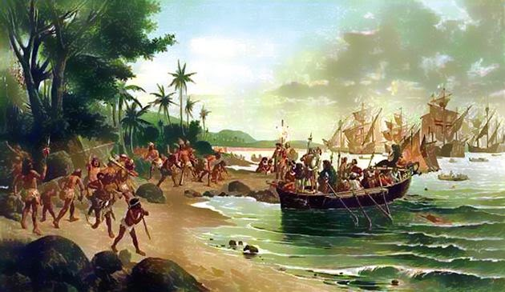

A desigualdade social em território nacional se deu início , na colonização exploratória portuguesa, tal fator teve como um dos grandes contribuintes o etnocentrismo!A desigualdade ganhou força a partir da chegada de navios cargueiros que traziam milhares de escravos negros para trabalharem de forma escrava e desumana em nosso território. Em 13 de Maio de 1888 a Lei Áurea era assinada e tinha como intenção por ''fim'' a escravidão em solo brasileiro....Mas será que realmente iria colocar fim a escravidão e consequentemente a desigualdade social? Ex escravos agora teriam as mesmas oportunidades que pessoas não escravas teriam? O Brasil agora estaria dando um passo gigantesco que mudaria ele para todo sempre?
Embarcações portuguesas chegando na Terra de Veracruz
Depois da assinatura da Léi Auréa(que agora dava "liberdade" a escravos), às coisas pareciam melhorar.....Mas não foi isso que aconteceu! Com o fim da escravidão que levaria a uma sociedade mais igualitária, ex escravos agora se viam com novas perspectivas de vida, mas sem terem o que fazer e para onde irem. Para que possamos entender melhor, imaginemos o seguinte cenário : Pedro tem 16 anos e está indo para o Ensino Médio, com ele moram suas 2 irmãs e sua mãe, seu pai abandonou os filhos ainda pequeno e ninguém sabe do seu paradeiro, sua mãe é doméstica pois desde muito cedo tinha que ajudar em casa já que seus pais também tiveram uma origem humilde. Pedro se ver tendo que optar entre duas opções : Continuar estudando e ver que em casa às coisas estão cada vez mais difícil ou abandonar à escola e tentar arrumar um trabalho para poder ajudar sua mãe e suas irmãs pequenas que precisam da ajuda deles. No outro lado da cidade reside Felipe, um jovem também de 16 anos, que acaba de voltar de um intercâmbio de idiomas na Inglaterra, ele é descendente de ingleses e foi para lá, aprender inglês e passar um tempo com parte inglesa de sua família. Mas também aos 16 anos Felipe se ver obrigado a decidir sua vida.....Ele precisa optar entre morar de vez na Inglaterra com seus familiares ou ir para os Estados Unidos fazer seu High School para depois entrar em uma Universidade americana.
Duas crianças representando as diferenças sociais vividas entre Felipe e Pedro
Pedro, o jovem nnegro, afetado pela ausência familiar , sua destruturização e pela desigualdade social no qual vivem milhões de jovens brasileiros como ele, traz em si consêquencias vividas pelo seu povo que foi e tem sido escravizados, assassinados e humilhados, opta por tentar a vida fora da escola. Afinal , nem a escola nem o governo darão de comer a suas irmãs e mães. Já Felipe decide ir para os Estados Unidos e aplicar para uma faculdade americana , depois de ter feito todo seu ensino médio lá. Enquanto Felipe estuda feliz da vida e sem nenhum problema nos USA, Pedro agora se ver sem saída, já que saiu da escola para tentar trabalhar e sobreviver mas acaba não conseguindo um ''emprego formal'' pois é e foi muito caro preencher todos os requisitos imposto para ele, que vive em um país gigante não só em território, mas também em desigualdade!